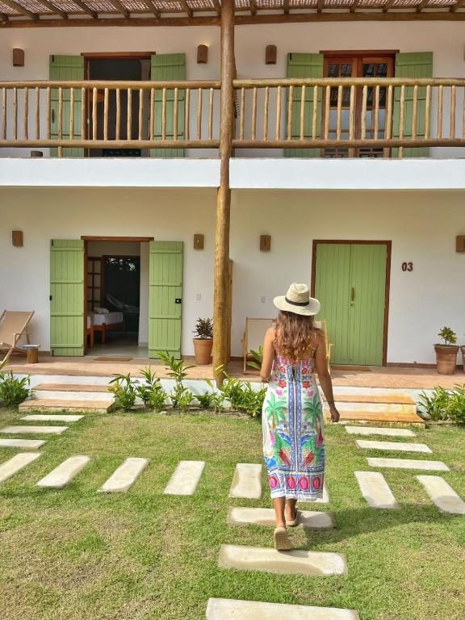
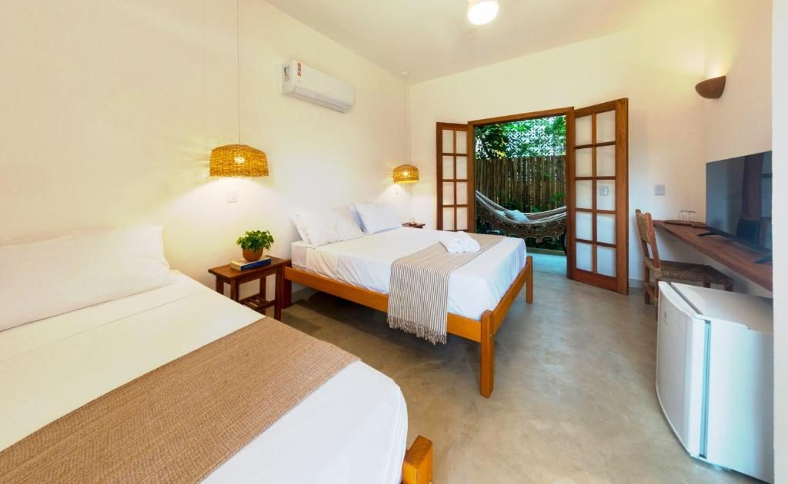
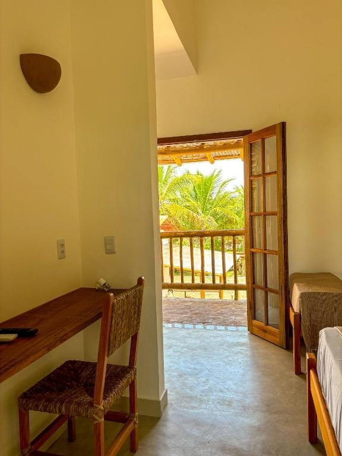
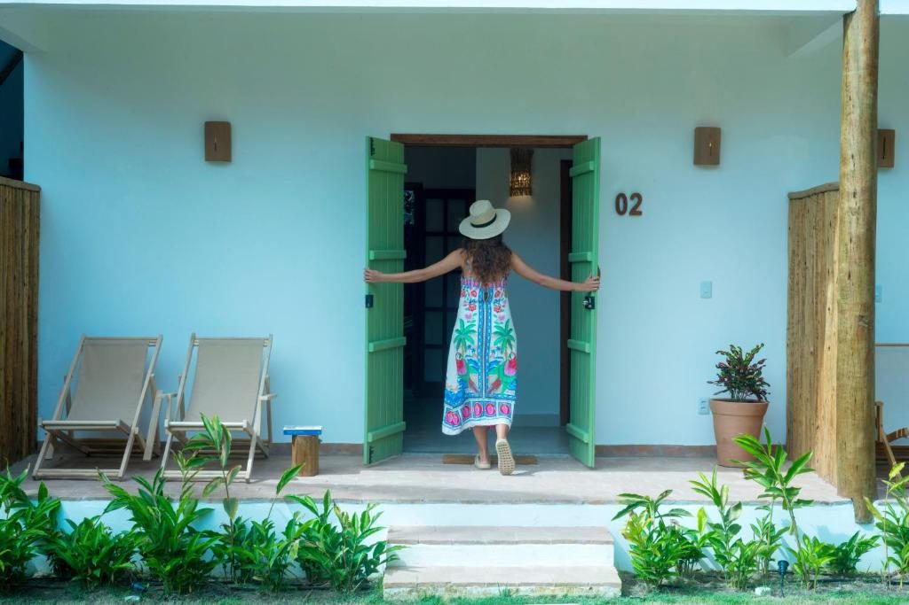
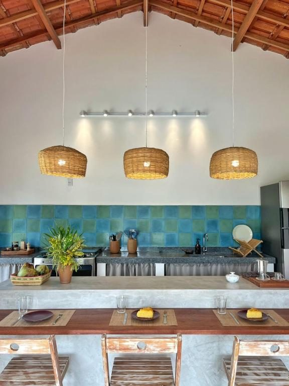
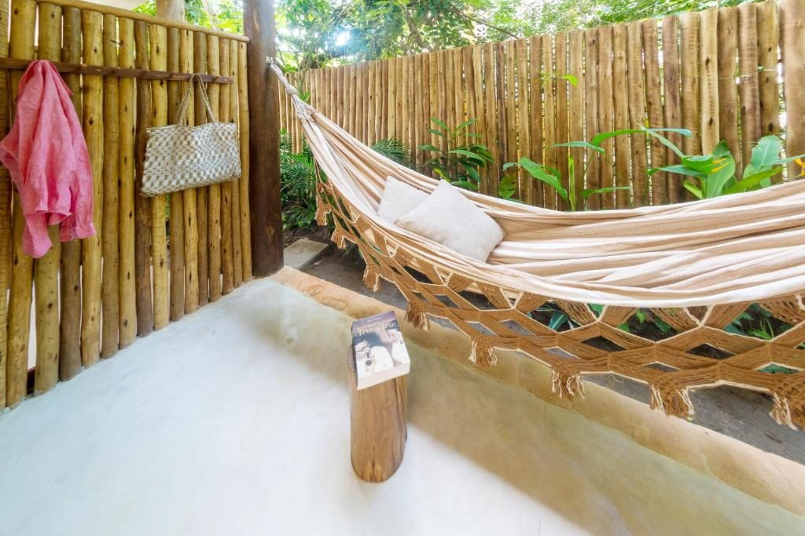
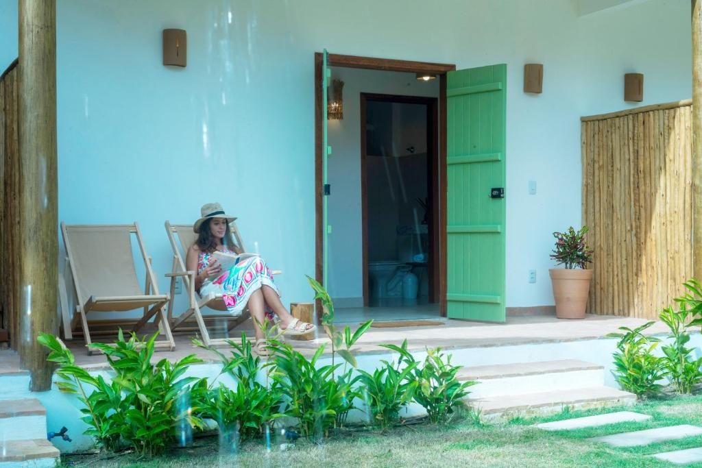

A tropical garden where time slows down. A handful of suites, a pool wrapped in green and the quiet of a tropical garden — the simple, refined retreat you were looking for.
A place to feel welcome
A small guesthouse, surrounded by green, where every detail is designed so you can slow down, rest and enjoy Cumuruxatiba at your own pace.
Just six suites, a pool wrapped by the garden, shared living spaces and a shared kitchen for light meals — all with simplicity, comfort and great care.
Here, welcoming is more than receiving. It's making you feel at home from the moment you arrive: with time to chat, suggest an outing, share a story of Cumuru, or simply let you enjoy the silence, the garden and the birdsong.

At Jardim Cumuru, comfort is in the things that truly matter: a cosy bed after a day at the beach, a hammock on the veranda, the green of the garden in the morning, a dip in the pool at dusk, coffee made your way in the shared kitchen. And that good feeling of not needing to rush.
It's a small guesthouse, made for those who love places with character, a connection to nature and attentive, personal service.
A place to arrive, breathe deeply and feel you're on holiday.
Six suites, each with a balcony to breathe in the garden. Comfort without excess: everything you need to sleep well, wake up calm and never want to leave.

Up to 3 guests

Up to 3 guests

Palms, flowers and cool shade. A stroll that feels like the whole morning.
Calm water surrounded by green, a wooden deck and birdsong.

Full and shared: make a coffee, a dinner or that drink, on your own time.

A hammock in the shade, a fresh breeze and a book. The kind of afternoon you don't forget.

Being greeted by name, getting a good beach tip and feeling there's someone nearby when you need.
On the far south coast of Bahia, between Prado and Corumbau, Cumuruxatiba blends beaches, cliffs, nature and the easy rhythm of a village where you can still enjoy your days without rushing. A destination for those who love the sea, nature, boat trips, natural pools, good food and experiences that happen in their own time. Maybe that's one of the best things about Cumuru: you can spend the day at the beach, discover somewhere new, or simply head back to the inn and do nothing at all.
Each beach has its charm — some right by the village, others perfect for exploring at leisure.
Boat trips, natural pools at low tide, walks, great food and quiet moments in the village.
Every season has its charm. From July to October, humpback whales pass along the coast — great for whale-watching.
Three to five days is enough to mix beach, outings and rest. And if you just want to stay at the Jardim, that's perfectly fine too.
"Brand-new, spotless facilities, a beautiful pool and super comfortable beds." Guest · Booking
"Perfect location, close to the beach and the village centre. We'll be back for sure." Guest · Booking
"Welcoming team, spotlessly clean and a quiet that does you good." Guest · Booking
Jardim Cumuru sits atop the cliff, next to the Mirante do Morro da Fumaça, in a quiet area close to the village centre.
Cumuruxatiba beach is about 450 metres away, roughly a 6-minute walk.
A location that blends the Jardim's calm with the convenience of being near the beach, the restaurants and local shops.
Cumuruxatiba, Prado — Bahia · 45980-000
No forms, no red tape. Talk to us directly on WhatsApp and we'll take care of everything for your arrival.
Check availability💬 WhatsApp: +55 (73) 99942-1815
📷 Instagram: @jardimcumuru
🕑 Check-in from 2 pm · Check-out until 11 am
📍 Cumuruxatiba, Prado — Bahia · next to the Mirante do Morro da Fumaça
✈️ Nearest airport: Porto Seguro (BPS), about 2h30 by car.
🚗 From Prado, follow the road to Cumuruxatiba into the village. Free parking at the inn.
🏖️ The beach is ~450 m (6 min walk); the village centre and restaurants are close by.